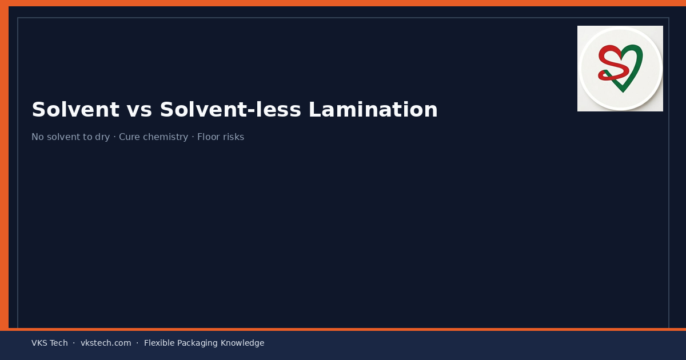
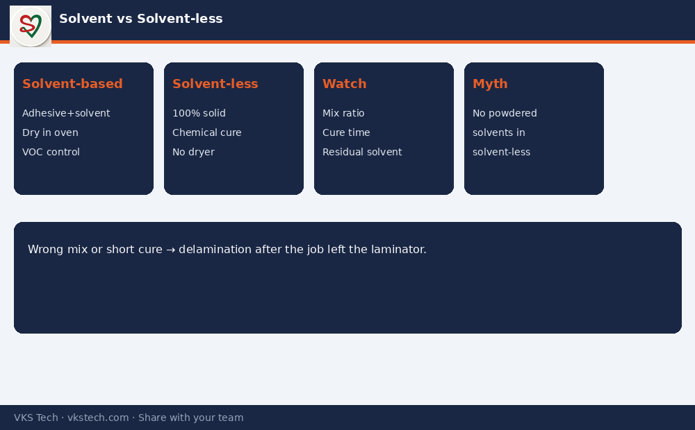

🔗 Solvent-less Does Not Mean “No Chemistry”. It Means No Solvent to Dry — and That Changes Everything on the Floor.
📖 10-min read · Lamination · Production + PPC + Quality
Many people hear “solvent-less” and think it is simply cleaner or cheaper. The real difference is process design: one system evaporates solvent in a dryer; the other relies on chemical curing of a 100% solid adhesive. Choosing wrong for the job, or running either system without discipline, shows up as delamination, odour, or blocked capacity.
- Solvent-based: Adhesive + solvent → coat → dry in oven → wind
- Solvent-less: 100% solid adhesive (often two-component) → coat → cure by reaction → no solvent dryer
- Typical speed: both can run 150–350 m/min depending on machine and structure
- Key risks: residual solvent / incomplete cure / wrong mix ratio / insufficient dwell before further process
1. Solvent-based Lamination — How It Works
Adhesive is diluted with solvent so it can be coated evenly. After coating, the web passes through a drying tunnel where solvent is evaporated. Layers are then nipped together. Residual solvent must be low enough for food safety and to avoid odour or blocking.
2. Solvent-less Lamination — How It Works
There is no solvent to evaporate. A reactive adhesive (often polyol + isocyanate) is mixed, coated at controlled temperature, and the layers are joined. Strength develops as the chemical reaction cures over hours. Mix ratio, temperature and clean metering are critical. “Powdered solvents” is a myth — solvent-less means zero solvent in the adhesive system.

3. Practical Choice for Plants
| Factor | Solvent-based | Solvent-less |
|---|---|---|
| Dryer energy | High | None for solvent |
| VOC / environment | Needs recovery/control | Much lower |
| Cure / strength time | Faster handle often | Needs cure time before slit/pouch |
| Process sensitivity | Viscosity + residual solvent | Mix ratio + temperature + cleanliness |
Next → Slitting Process in Converting Plants
🔗 सॉल्वेंट-लेस का मतलब “कोई केमिस्ट्री नहीं” नहीं है। मतलब सॉल्वेंट सुखाना नहीं — और फर्श पर सब कुछ बदल जाता है।
📖 10-मिनट पढ़ें · लैमिनेशन · प्रोडक्शन + PPC + क्वालिटी
सॉल्वेंट-बेस्ड में चिपकाने वाला पदार्थ सॉल्वेंट में घुला होता है और ओवन में सूखता है। सॉल्वेंट-लेस में 100% सॉलिड चिपकाने वाला (अक्सर दो-घटक) रासायनिक प्रतिक्रिया से क्योर होता है — कोई सॉल्वेंट नहीं उड़ता। “पाउडर सॉल्वेंट” एक मिथक है।
अगला → स्लिटिंग प्रोसेस